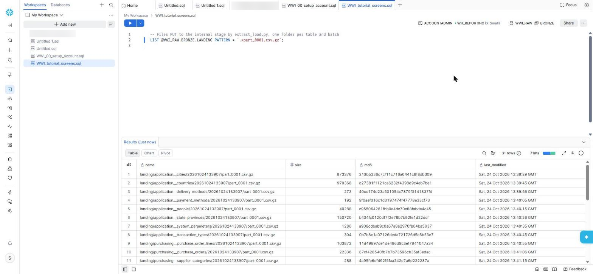
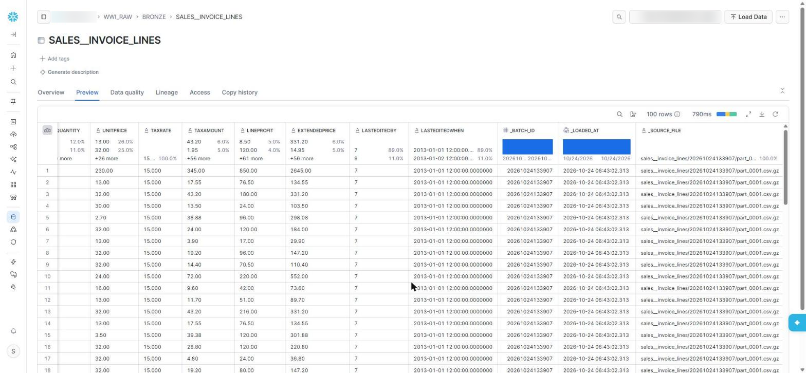
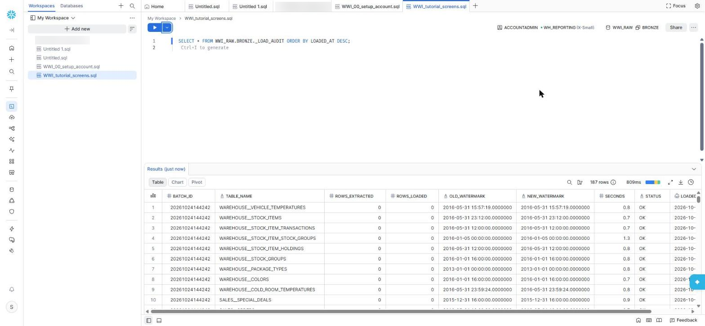

Chapter 5 · Loading
Extract & Load into Bronze
One Python script moves data from SQL Server into Snowflake. For every table it reads only the rows that changed since last time, writes them to a compressed file, uploads the file to the stage and copies it into a Bronze table. Bronze keeps everything exactly as it arrived, as text, plus three columns saying when and from which file.
The table list is generated
Writing 31 table definitions by hand invites typos. docs/generate_project_files.py reads the real schema of the source (columns, types, primary key) and writes extract/tables.yml, picking each table's change column automatically:
- source: Sales.InvoiceLines
target: sales__invoice_lines
key: [InvoiceLineID]
change_column: LastEditedWhen
columns:
- {name: InvoiceLineID, type: 'int'}
- {name: InvoiceID, type: 'int'}
- {name: StockItemID, type: 'int'}
...Step 2: only the rows that changed
Every column is read as text that Snowflake can cast later, so nothing is lost in a type conversion on the way: dates in ISO format, geography as WKT, binary as hex.
if t == "geography":
out.append(f"[{n}].STAsText() AS [{n}]") # POINT (-87.1 30.4)
elif t == "varbinary":
out.append(f"CONVERT(varchar(max), [{n}], 2) AS [{n}]") # hex
elif t in ("datetime2", "datetime"):
out.append(f"CONVERT(varchar(27), [{n}], 121) AS [{n}]") # 2013-01-01 12:00:00.0000000
...
sql = f"SELECT {select_list(t['columns'])} FROM [{schema}].[{table}]"
if cc and mark:
sql += f" WHERE [{cc}] > CONVERT(datetime2, ?, 121)" # the high-water markThe new high-water mark is simply the largest change-column value seen in this batch. It is only saved after the COPY succeeds, so a failed run is retried from the same point.
Steps 3–5: file, stage, COPY
cur.execute(f"CREATE TABLE IF NOT EXISTS {target} ({', '.join(c.upper() + ' VARCHAR' for c in names)}, "
"_BATCH_ID NUMBER, _LOADED_AT TIMESTAMP_NTZ DEFAULT CURRENT_TIMESTAMP()::TIMESTAMP_NTZ, _SOURCE_FILE VARCHAR)")
cur.execute(f"PUT 'file://{path}' @WWI_RAW.BRONZE.LANDING/{t['target']}/{batch_id}/ AUTO_COMPRESS = FALSE OVERWRITE = TRUE")
cur.execute(f"COPY INTO {target} ({cols}, _BATCH_ID, _SOURCE_FILE) "
f"FROM (SELECT {positions}, {batch_id}, METADATA$FILENAME FROM @WWI_RAW.BRONZE.LANDING/{t['target']}/{batch_id}/) "
f"FILE_FORMAT = (FORMAT_NAME = 'WWI_RAW.BRONZE.CSV_GZIP') ON_ERROR = ABORT_STATEMENT")
if loaded != n:
raise RuntimeError(f"{t['source']}: extracted {n} rows but COPY loaded {loaded}")ON_ERROR = ABORT_STATEMENT makes a single bad row fail the whole file instead of quietly skipping it, and the row-count check after COPY proves that every extracted row arrived.
Why Bronze is all text
If a column's type ever changes in the source, a typed Bronze table would reject the load in the middle of the night. A text column accepts anything; the Silver staging model does the casting, where a failure is a clear dbt error you can fix and re-run.
The first load
Run by hand from the worker with exactly the command Airflow uses:
cd /opt/airflow/wwi_snowflake/extract && python extract_load.py --all| Table | Rows | Seconds |
|---|---|---|
| Warehouse.StockItemTransactions | 236,667 | 31.1 |
| Sales.OrderLines | 231,412 | 37.1 |
| Sales.InvoiceLines | 228,265 | 42.2 |
| Sales.CustomerTransactions | 97,147 | 21.7 |
| Sales.Orders | 73,595 | 18.5 |
| Sales.Invoices | 70,510 | 41.6 |
| … 25 more tables | ||
| Batch 20261024133907, 31 tables | 1,056,789 | 431 |
One table came back with 0 rows: Sales.Customers, hidden by row-level security (Chapter 3). After the fix, a second batch loaded its 663 rows, for a total of 1,057,452 rows in 31 files, 21.7 MB compressed. Every row in Bronze still says where it came from:
| INVOICELINEID | QUANTITY | UNITPRICE | EXTENDEDPRICE | LASTEDITEDWHEN | _BATCH_ID | _SOURCE_FILE |
|---|---|---|---|---|---|---|
| 1 | 10 | 230.00 | 2645.00 | 2013-01-01 12:00:00.0000000 | 20261024133907 | sales__invoice_lines/20261024133907/part_0001.csv.gz |


The next night: nothing changed, nothing loaded
On the next run, every table's change column was compared with its mark and no rows qualified. The whole extract took 72 seconds, mostly connection set-up, and moved 0 rows:
Sales.InvoiceLines 0 rows 0.8s mark 2016-05-31 12:00:00.0000000 -> 2016-05-31 12:00:00.0000000
Sales.Customers 0 rows 0.9s mark 2016-05-07 00:00:00.0000000 -> 2016-05-07 00:00:00.0000000
...
batch 20261024140212: 0 rows extracted and loadedEvery batch writes one row per table to BRONZE._LOAD_AUDIT: rows extracted, rows loaded, old and new mark, seconds. It is the first place to look when someone asks "did last night's load run?".

Key takeaways
- High-water marks on each table's change column make every night's load incremental.
- Files go to an internal stage with PUT, then into Bronze with COPY INTO.
- Bronze is append-only text with batch, time and file columns; Silver does the typing.
- The mark only moves after a successful COPY, and the row count is checked every time.